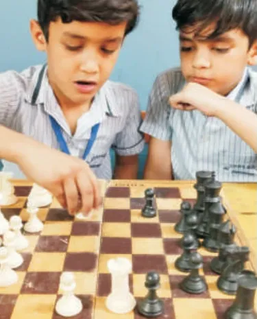
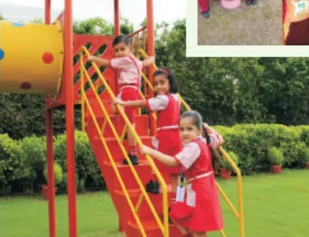

Prospectus · 2027–28
Where learning
meets serving.
Sixty years of children growing up on four green acres in Faridabad. This is the school, in its own words.


Since 1965CBSE · Nursery to XIICo-educationalIdicula Trust Society (Regd.)
Our story
Six decades of learning to serve
St. John's School was founded in 1965 by Shri T.I. John under the aegis of the Idicula Trust Society (Regd.). Spread over four acres, the school is a majestic building amid sprawling greens: eco-friendly, pleasant and made for the all-round growth of every child.
Education has always been the primary focus of progressive civilizations that have contributed to the welfare of the human race. Providing meaningful education to children, so as to shape them into contributing citizens, is a concern shared equally by parents and educators.
Educating children is a complex responsibility. It calls for people who can balance the unstoppable technological growth of this century with time-tested traditions and values, to arrive at that magical balance that can nurture the leaders of tomorrow.
May Lord Almighty be the guiding spirit behind every endeavour of this great institution.
Our vision
Consistent, quality education that gives every student a robust spiritual, moral, social, professional and intellectual foundation, and helps them take in the life skills and awareness to grow into global citizens.
Our alumni
Bureaucrats, soldiers, educators, engineers, doctors, architects, chartered accountants and business people, along with artists in music, dance and fine arts, and well-known sportspeople.
St. John's School, Faridabad2
Growing up here
Every stage, its own kind of day
From the first day in the pre-primary wing to the Class XII boards, each stage is shaped around what children need at that age.

Nursery and KG
Mon – FriSummer 8:35 AM – 12:55 PMWinter 9:00 AM – 1:20 PM
- Air-conditioned pre-primary wing
- Attractive toy train
- Kids play area
- Huge amphitheatre
- Audio visual room
- Indoor fun activities
Classes I to V
Mon – SatSummer 7:35 AM – 1:45 PMWinter 8:05 AM – 2:15 PM
- Digitalized primary education
- Experiential learning
- Innovative methodology
- Soft skills
- Child-friendly infrastructure

Classes VI to VIII
Mon – SatSame timings as Classes I to XII
- Science and computer labs
- Performing and fine arts
- Eight sports
- Environment programmes
- Excursions

Classes IX to XII
Mon – SatCBSE board classes
- Skill subjects from Class IX
- Four streams in Class XI
- Senior library
- Seminars and workshops
- Full-time counsellor
School timings
| Who | Days | Summer | Winter |
|---|---|---|---|
| Nursery and KG | Mon – Fri | 8:35 AM – 12:55 PM | 9:00 AM – 1:20 PM |
| Classes I to XII | Mon – Sat | 7:35 AM – 1:45 PM | 8:05 AM – 2:15 PM |
Stages and timings3
Subjects
Choices that open doors
Class IX: main subjects
- English Language & Literature
- Hindi Course-A / Sanskrit
- Mathematics
- Science
- Social Science
Class IX: one skill subject
- Artificial Intelligence
- Introduction to Financial Markets
- Information Technology
- Hindustani Music Vocal
- Painting
- Physical Activity Trainer
Class XI: four streams
🩺Medical
Compulsory
- English Core
- Physics
- Chemistry
- Biology / Biotechnology
📐Non-Medical
Compulsory
- English Core
- Physics
- Chemistry
- Mathematics
📊Commerce
Compulsory
- English Core
- Economics
- Business Studies
- Accountancy
🏛️Humanities
Compulsory
- English Core
- Economics
- History
- Political Science
 Our seniorsBiology lab
Our seniorsBiology labSubjects and streams4
Beyond the classroom
A stage, a field and a garden for everyone
 Annual function
Annual function🎭 Performing and fine arts
A well-equipped music and fine arts department builds higher-order thinking and creative skills.
- Dance
- Music
- Drama
- Theatre
- Mime
- Clay modelling
- Craft
- Mono acting
🏅 Sports
A huge, welcoming playground and coaching across eight games.
- Badminton
- Volleyball
- Basketball
- Athletics
- Football
- Yoga
- Chess
- Carrom

Kids zone🌱 Environment awareness
- Awareness rallies
- Public sensitisation
- Swachh Abhiyaan
- Group discussion
- Composting
📚 Knowledge hub
A well-stocked senior library, an air-conditioned junior library, skills training, and seminars and workshops in two air-conditioned auditoriums. Plus regular excursions.
Life at St. John's5
Facilities
Safe, cared for, and comfortable
What every parent asks about, answered.
Science lab- 🔬Well-equipped science and computer laboratories
- ❄️Air-conditioned pre-primary wing
- 🎤Two air-conditioned seminar auditoriums
- 📹Lush green premises with CCTV surveillance
- 🩹Medicare centre with trained staff and an ambulance
- 🤝Full-time school counsellor
- 🏟️Huge, welcoming playground
- 💧RO water supply in water coolers
- ⚡Generator for uninterrupted power
- 🖥️Digital classrooms for primary

🚌 School transport
- CCTV
- GPS
- Speed governor
- Female attendants
Routes and stops are shared by the transport office at admission.
Facilities and transport6
Admission and registration
Joining St. John's
Admissions for 2027–28 are open for Nursery and Class XI. Seats in other classes open when families move.
- EnquireOnline or at the office.
- VisitSee the campus and meet the team.
- RegisterWith birth certificate and residence proof.
- DocumentsOriginals for verification.
- ConfirmationAdmission on merit.
Please note
- Registration is done on submission of a copy of the date of birth certificate and residence proof.
- The school admits students only on merit. Admission stays valid subject to submission of the documents the school asks for.
- Fill the name and date of birth exactly right, and complete every field. No change is allowed afterwards.
- Apart from the security deposit, charges paid at regular or provisional admission are not refunded when a child leaves.
- Registration does not guarantee admission.
Age on 31 March 2027
| Nursery | 3 years or more |
| LKG | 4 years or more |
| UKG | 5 years or more |
| Class I | 6 years or more |
Fees
As per CBSE norms, paid in instalments. The fee structure for 2027–28 is shared with every family that enquires.
| Fee counter hours | |
|---|---|
| Mon – Fri | 8:15 AM – 12:00 PM |
| Saturday | 8:15 AM – 10:30 AM |
Admission7
Come and see us
The best way to know a school is to walk through it.
Book a visit on any working day. Bring your questions, and your child.
Phone0129 224 2097, 0129 224 8895
Websitewww.stjohnsschool.co.in
AddressSt. John's School, Sector 7, Block A, Faridabad, Haryana
Follow usInstagram @stjohnsschoolfaridabad · Facebook: St. John's School Faridabad · YouTube: St. John's School, Sector-7A, Faridabad
St. John's School · Learn to serveCBSE affiliation 530048